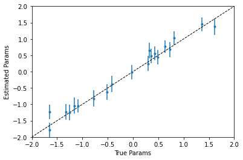

4. Multivariate Bayesian Linear Model¶
import jax.numpy as jnp
from jax import random
from melvin import LaplaceApproximation
import jax
import matplotlib.pylab as plt
from functools import partial
jax.config.update("jax_enable_x64", True)
WARNING:absl:No GPU/TPU found, falling back to CPU. (Set TF_CPP_MIN_LOG_LEVEL=0 and rerun for more info.)
SEED = random.PRNGKey(123068)
N_ROWS = 200
N_PARAMS = 20
NOISE_AMPLITUDE = 2.0
SEED, _seed = random.split(SEED)
true_params = jax.random.normal(key=_seed, shape=(N_PARAMS,))
print(f"True parameters\n{true_params}")
SEED, _seed = random.split(SEED)
X = jax.random.normal(key=_seed, shape=(N_ROWS, N_PARAMS))
print(f"\nFirst 2 rows of data\n{X[:2,:]}")
SEED, _seed = random.split(SEED)
eps = NOISE_AMPLITUDE*jax.random.normal(key=_seed, shape=(N_ROWS,))
y = X @ true_params + eps
print(f"\nFirst 2 labels\n{y[:2]}")
True parameters
[-0.41959653 -0.515441 0.29349301 -1.08905649 0.81179762 1.60976376
-1.32718381 0.36175878 -1.65091768 0.72506684 0.32725878 -1.15274689
-1.64335485 -1.25164681 1.36635926 0.63472409 0.42828669 -0.01882997
-0.77914543 0.49000033]
First 2 rows of data
[[ 1.12425312 1.20534369 -1.49134698 -0.797011 -0.8784741 -0.92112943
-0.76324367 -0.14223209 0.43083118 0.39633834 -2.00550183 1.14734086
-0.97638592 -0.60403735 -0.28984657 -0.22324324 0.34924965 0.82033834
-0.83760291 -1.30904016]
[ 0.89877167 -1.14499604 0.42068895 0.11273099 -0.61621765 0.0912808
0.25485903 -0.49365265 -0.24655109 -0.908175 1.78042556 0.72285995
0.37207329 0.46716234 2.13434933 0.37722536 -1.85845726 0.81766798
0.00409695 -1.11364174]]
First 2 labels
[-2.12118451 1.43767218]
class BayesianLinearModel(LaplaceApproximation):
param_bounds = jnp.array([[0.0, jnp.nan]] + [[jnp.nan, jnp.nan]]*N_PARAMS)
def model(self, params, X):
weights = params[1:]
return X @ weights
def log_prior(self, params):
# Uninformative priors on both parameters
noise = params[0]
weights = params[1:]
weights_log_prior = jax.scipy.stats.norm.logpdf(weights, loc=0.0, scale=100.0)
noise_log_prior = jax.scipy.stats.expon.logpdf(noise, scale=100.0)
return noise_log_prior + jnp.sum(weights_log_prior)
def log_likelihood(self, params, y, y_pred):
noise = params[0]
log_like = jax.scipy.stats.norm.logpdf(y, loc=y_pred, scale=noise)
return jnp.sum(log_like)
SEED, _seed = random.split(SEED)
initial_weights = jax.random.normal(key=_seed, shape=(N_PARAMS,))
initial_noise = jnp.array([0.5])
initial_params = jnp.concatenate([initial_noise, initial_weights])
model = BayesianLinearModel(
name="Bayesian Linear Model",
initial_params=initial_params,
X=X,
y=y,
)
print(model)
/opt/hostedtoolcache/Python/3.9.4/x64/lib/python3.9/site-packages/scipy/optimize/_minimize.py:524: RuntimeWarning: Method BFGS does not use Hessian information (hess).
warn('Method %s does not use Hessian information (hess).' % method,
Laplace Approximation: Bayesian Linear Model
Fixed Parameters: []
Fit converged successfully
Fitted Parameters:
[
1.854568019199449 +/- 0.09272195095167997, [Lower Bound = 0.0]
-0.3817689123091382 +/- 0.14940109367478036,
-0.6289503767733635 +/- 0.14419398401133407,
0.24525477936457957 +/- 0.14138182213209233,
-1.0461024063109976 +/- 0.1264792595376124,
1.026054670954664 +/- 0.12825306065855555,
1.3743531069487707 +/- 0.14776026363688596,
-1.2281199536928509 +/- 0.14627975718113442,
0.4848238371937745 +/- 0.1357523438696344,
-1.7848977160414998 +/- 0.12937219966241317,
0.6737377511828874 +/- 0.13886640029042768,
0.6493333626842216 +/- 0.1437574275491662,
-1.038012847514606 +/- 0.14765524247582404,
-1.2232863181923752 +/- 0.13453458593814543,
-1.2492718564462855 +/- 0.14506795043923135,
1.4507643357112376 +/- 0.1303539997918963,
0.7712677082552469 +/- 0.11995210654407117,
0.5624949147095955 +/- 0.12902459374854036,
-0.01670756712081215 +/- 0.13251652752628298,
-0.8227827025515791 +/- 0.15265917255401534,
0.44370798401973094 +/- 0.13134989662352942,
]
Log Posterior Prob = -522.4341559217474
print(f"True parameters\n{true_params}")
print(f"\nFitted parameters\n{model.params.x[1:]}")
print(f"\nTrue noise\n{NOISE_AMPLITUDE}")
print(f"\nFitted noise\n{model.params.x[0]}")
True parameters
[-0.41959653 -0.515441 0.29349301 -1.08905649 0.81179762 1.60976376
-1.32718381 0.36175878 -1.65091768 0.72506684 0.32725878 -1.15274689
-1.64335485 -1.25164681 1.36635926 0.63472409 0.42828669 -0.01882997
-0.77914543 0.49000033]
Fitted parameters
[-0.38176891 -0.62895038 0.24525478 -1.04610241 1.02605467 1.37435311
-1.22811995 0.48482384 -1.78489772 0.67373775 0.64933336 -1.03801285
-1.22328632 -1.24927186 1.45076434 0.77126771 0.56249491 -0.01670757
-0.8227827 0.44370798]
True noise
2.0
Fitted noise
1.854568019199449
SEED, _seed = random.split(SEED,2)
samples = model.sample_params(prng_key = _seed, n_samples = 10000)
params_mean = jnp.mean(samples, axis=0)
params_low = jnp.percentile(samples, q=5, axis=0)
params_upp = jnp.percentile(samples, q=95, axis=0)
plt.errorbar(
true_params,
model.params.x[1:],
yerr=(
params_upp[1:] - params_mean[1:],
params_mean[1:] - params_low[1:]
),
fmt="."
)
plt.plot(
[-2, 2], [-2, 2], "k--", lw=1
)
plt.xlim([-2, 2])
plt.ylim([-2, 2])
plt.xlabel("True Params")
plt.ylabel("Estimated Params")
plt.show()
